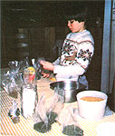
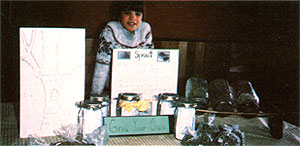

MOTHER feels strongly that youths can be creative "doers", working toward more ecological and self-reliant lifestyles . . . whether their tasks be raising chickens on a farm or maintaining rooftop container gardens in the city. To support the endeavors of our often overlooked "underage" citizens, we're glad to publish wellwritten articles from younger children and teenagers concerning projects they've undertaken. However, we recommend that all young authors query (that is, send us a letter telling about the story you'd like to do) before writing a full article. Address inquiries to Mother's Children,THE Mother Earth News (restricted) , 105 Storey Mountain Road Hendersonville, North Carolina 28791.
I have my own home business . . . making and selling products that I call Sprout Jar Kits. Each package of sprouting equipment consists of one wide-mouthed quart canning jar, a lid ring and screen, two tablespoons of alfalfa seeds, four tablespoons of mung seeds, and a three-page instruction pamphlet. The kits cost me 90 cents to make, and I sell them for $2.00 (wholesale) or $3.00 (retail) apiece.
My business started as a home-schooling project. (My family are Seventh Day Adventist Christians, so I've never gone to public school. Our religion honors the seventh day - Saturday - as holy . . . looks forward to the second coming of Jesus Christ . . . and teaches that home is the best place to live, work, play, and study.) And I've certainly learned a lot from my selling experiences.
For one thing, I've begun to understand how to use money (as well as how to make it!). I record all the cash I get or spend . . . so I can keep track of expenses, income, and profit. Furthermore, since putting kits together takes time, I'm learning about discipline and setting priorities. I'm finding out about how to deal with customers and storekeepers, too. (Mom helps me a lot with this part of the job, though, because I'm a little shy.) And my parents tell me I'm probably even learning some lessons without knowing it!
When I started the business, my stepfather bought 13 cases of wide-mouthed canning jars, 8 feet of fiberglass screening, 25 pounds of mung beans, and 10 pounds of alfalfa seeds. All that cost $89.99. I've since sold cases of completed kits to natural food stores, restaurants, food wholesalers, a fruit and vegetable stand, and a large independent grocery store. My mother's cousin even sells the kits in her beauty parlor!
My mom and I made signs to promote my product. Some of them say, "GROW FRESH AND NUTRITIOUS GREENS ALL WINTER LONG! ASSEMBLED BY JOSHUA, 10 YEARS OLD." Others say: "SPROUTING IS EASY, ENERGIZING, ECONOMICAL, AND ECOLOGICAL. A GREAT GIFT FOR YOUNG AND OLD ALIKE." We put a few of the posters in a grocery, and that store has sold the most jars of any place I've tried!
Of course, my friends and relatives have bought some, too. For example, my great-aunt and her granddaughter once came to spend a few days with us. They had never even tasted sprouts . . . but by the time they left, they both liked the little greens so much that my great-aunt bought them each a sprouting jar.
I could also probably sell the kits at flea markets and craft fairs, but most of those events are held on Saturdays, and my family keeps our Sabbath for going to church, reading the Bible, having special meals, taking walks, visiting friends, and just being with each other.
In the year since I started my business, I've earned enough income to pay back all the money my stepfather invested in the supplies . . . and I've made $54 profit besides! I also still have three cases (of 12 jars each) out on consignment, and another three I haven't yet sold.
At first, I wanted to buy myself a bike with my profits, but my mom convinced me to reinvest the money in more supplies and a second business (selling felt toys door to door). That taught me about thinking of the future . . . which was one lesson I really didn't expect to learn from selling sprouting jars.
By the way, since I started business, I've seen other kits that sell for $9.00, are made of plastic (including three plastic tops), and come in fancy cardboard containers. My jars are plain and simple, but they don't include any wasteful throwaway covers, and besides, glass is better for the environment than plastic.
You might want to go into business with sprout kits yourself, so I've included a section that tells how to make a dozen of them.
I hope other young people do try assembling and selling the kits. It's been a profitable and enjoyable experience for me. And besides, seed sprouts are the most alive food we can eat. The seeds themselves have high concentrations of nutrients, and sprouting them increases the amount of vitamins A, B, C, and E from four to ten times. So when you sell sprout kits, you're sharing a really good food with your customers as well as making money for yourself!
EDITOR'S NOTE: For more information about healthful sprouted foods, turn to page 34.
|
Photos by Penny King Running his own ""at home"" assembly line, Joshua can put together a case of sprout jar kits in half an hour |
The author with an attractive ? and education ? display |
 |
|
 |
|
|